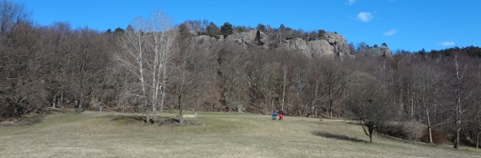
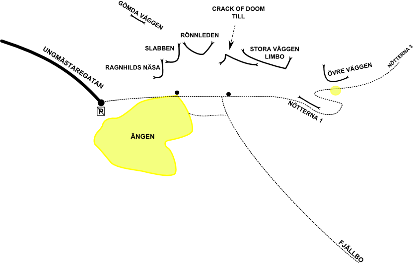
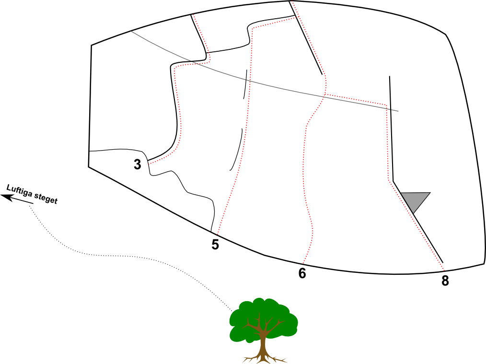
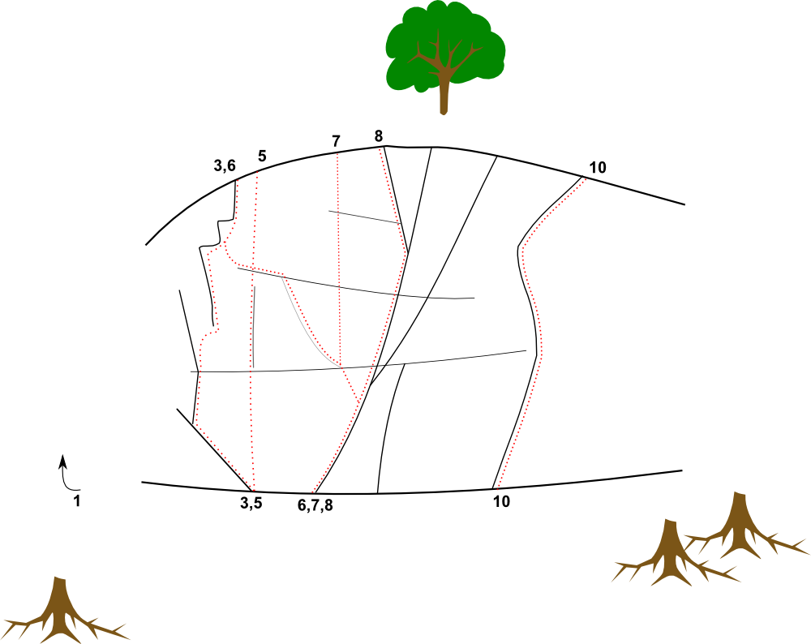

Utby
Lat: 57.743873
Long: 12.056873
Kategori:3 stjärnor
Utby
Allmänt
Göteborgs paradområde, där bland annat klätterträffen Climb In (
) hållits på den stora ängen varje år sedan någon gång på 70-talet.
Ibland säger Göteborgarna Utby om hela området från Gärdsås till Fjällbo, som ju egentligen är en sammanhängande klippformation. Uppe på platån ligger Bergsjön där man kan svalka av sig varma sommardagar.
Karaktär

Ca 150 leder av alla typer. De flesta väggarna hänger samman i ett enda långt stup som börjar vid ängen och sträcker sig från
Ragnhilds näsa
till
Limbo
.
Gömda väggen
ligger lite för sig längst uppe till vänster, och
Övre väggen
längst upp till höger.
Nedstigning kan göras i vänsterkant, mellan Ragnhilds näsa och Slabben, eller i högerkant mellan Limbo och Övre väggen. En lite luftig nedstigning kan man också göra i kaminen till vänster om Tuborg.
Observera att camping är förbjuden i hela området, liksom eldning på ängen.
Slå upp tältet vid Lisebergs camping i Kålltorp istället!
Klippan är knoppig. Klättringen är varierad med tonvikt på fingersprickor i vertikal lutning.
Området är i huvudsak bultfritt, och ingen ny bultning får ske. Generellt gäller att du behöver ett
tradrack
plus både små och stora friends, och ett par längre slingor.
Här finns även massor av block att bouldra på längs med hela berget.
Vägbeskrivning
E20 från Alingsås/Stockholm - ta av vid Partillemotet
E20 från Göteborg - ta av vid Munkebäcksmotet
Parkera på Ungmästaregatan/Kamgatan. Parkera INTE på Ungmästargatan, vilket angetts här tidigare.
Alternativt, parkera på parkeringen på Fjällbogatan.
Kollektivtrafik finns också. Ta buss 58 från Centralstationen mot Bergsjön. Hållplats Ungbrodersgatan ligger i närheten. (Finns utmärkt på Google-kartan.)
Kolla Västtrafiks hemsida för tidtabell.
Access
Översikt

Gömda väggen
En fin vägg med några leder framförallt i övre femma-registret.
Hitta hit:
Uppe i skogen till vänster om Ragnhilds Näsa. Några minuters vandring. Gå upp förbi boulderblocken vid soptunnan på ängen. Om du kommer till en liten bouldervägg så är det Köksväggen. Gå då vänster och fortsätt bland de obskyra stigarna. Väggen är ganska stor och du kommer nog inte att missa.
-
- Brakkaminen
- 5-
- Tydlig kaminformation. Börjar på ett block som övergår i en bred spricka. Firningsankare på toppen.
-
- Moss crack
- 5
- En tydlig bågformation som bjuder på förhållandevis branta jam.
-
- Tåjammet
- 5
- Den vänstra sprickan bakom ett stort träd. Väldigt fin jam- och laybackklättring.
Bakterieväggen
-
- Blåbär i femmaträsket
- 5
- Startar till höger om Bakterieväggen. Tunn spricka i ett litet dieder upp till en liten trekantig hylla 1 meter under toppen.
Ragnhilds näsa
Den första högre väggen man kommer till om man går rakt upp från ängen.
-
- Traversen
- 4
- Traversen under det stora taket som ligger mellan Ragnhild och slabben.
Slabben
Nybörjarvänlig klättring, ligger precis ovanför ängen, och karaktäriseras av en gigantisk platt sten som ligger som ett tak ovanpå två andra stenar. Om man vill ta sig upp för att rigga topprep går det att scrambla upp lätt i kaminen mellan Slabben och Ragnhilds näsa.
-
- Slab of thirst
- 5-
- Highball/repled med en säkring uppför den stora slabben.
-
- Olas direkttransport
- 4+
- Startar i ett litet hörn precis till höger om uppstigningsleden mellan Ragnhild näsa och Slabben. Upp till en gräsig hylla och vidare på sva och sprickor till hyllan ovanför slabben.
-
- Töjbara benet
- 4+
- Några meter till höger om föregående led. Går upp i en bred spricka som lutar åt höger och planar ut. Traversera ut till areten och lätt klättring upp. Traversen kan göras luftig eller så kan man krypa i sprickan...
-
- Bagarmossen
- 6
- Går längs aréten och ansluter med föregående led längre upp
-
- Dagen efter
- 4+
- Startar i en bred spricka till höger om aréten, och sen traverserar några meter åt höger och så upp till väggens sista horisontella spricka, och då tillbaka till aréten och upp. Kul och rätt tung klättring.
-
- Fars dag
- 3
- Går upp ungefär vid föregående leds "högraste" punkt, och ansluter till denna, men traversen till aréten görs tidigare.
-
- Skärselden
- 4+
- Fin lite bred handjamspricka mitt på väggen. Fin nybörjarled
-
- Hurtigrutten
- 5-
- Börjar några meter till vänster om hörnet. Väggklättring som är något svårsäkrad i början leder upp till en hylla med ett träd och vidare upp till toppen.
Följande fyra leder har samma start inne i hörnet. Kan vara blött ett tag efter regn.
-
- Sökta Linjen
- 4+
- Travers som startar i högerkant på diedret (samma start som La Traviata), följ den tydliga sprickan som slutar några meter vänster om Skärselden.
-
- La Traviata
- 4+
- Börja längst inne i hörnet och traversa kort åt vänster och följ sprickor rakt upp. Fin, spektakulär klättring för graden. Inte helt trivial. Om den är blöt kanske den går att klättra ändå. Annars går det att klättra rakt under spricksystemet (eliminerar traversen)
-
- Bamse
- 6
- Efter den gemensamma starten med föregående led, gå upp i en spricka.
-
- Flygande maran
- 5+
- Efter hörnet gå ut höger mot ett stort flak. Inslag av stäm- och kaminklättring.
Rönnleden
Från Slabben, gå runt nästa arete åt höger, till ett stort hörn ganska högt upp i backen.
-
- Rönnleden
- 4+
- Uppenbar bred spricka med stenblock i
-
- Sneda sprickan
- 5
- Kort diagonal spricka åt vänster som ansluter till Rönnledens utsteg. Stentuff om du inte fullt ut bemästrar handjam, och även då tämligen hård för sin grad. Väldigt fin och välsäkrad!
-
- Slot machine
- 7-
- Tunn spricklinje med fina fingerslots. Börjar en meter till höger om föregående led och följer den tunna högra sprickan, lite otydlig sträckning i toppen. Välsäkrad med förnuft
-
- Svåra diedret
- 6-
- Det tunna hörnet. Går att säkra väl, faktiskt! Dubbel uppsättning småkilar rekommenderas.
Monster crack
-
- Gröna sprickan
- 5
- Klättra upp till taket och traversera längs med detta
-
- Monster crack
- 5+
- Ganska brant klättring på bitvis stora jam, en upplevelse i graden!
-
- Monster Layback
- 6+
- Klockrent dieder! Det sitter en gammal (historisk) säkringsgrej i sprickan
-
- Mönster layback
- 6+
- Någon/några har numera bosatt sig och byggt ett hus mitt under leden
-
- Outsiders
- 7-
- Sportklättring uppför areten. Leden hittar du på vägen mot Monster Layback
Crack of doom
-
- Är detta verkligen Alfa Helix
- 5+
-
-
- Återvändsgränden
- 6-
- En tydlig kaminformation som avslutas med en handspricka, ofta grusig. Har ett firningsankare
-
- Våta drömmar
- 7
- Tunnare spricka mellan Återvändsgränden och Crack of Doom.
-
- Crack of Doom
- 6-
- Den tydliga handjamsprickan, det hänger ett firningsankare lite höger om sprickan när man kommit upp. Passa på att klättra denna om du finner den torr!
-
- Byxspräckareleden
- 4+
- Lång och äventyrlig led. Starta genom att klättra rampen vänster om Lasses hörn, därefter lätt travers förbi björken (ovanför Asterix och Obelix), klättra diedret rakt upp, kliv sedan ut höger cirka 2 meter och därefter lättaste vägen upp.
-
- Papaji Direkt
- ?
- Leden nämns i Fabrikens pappersförare
Följande två leder startar på samma hylla som Byxspräckareleden är:
-
- ??
- 7-
- Ska finnas en sjuminus mitt på areten också
-
- Y-sprickan
- 6+
- Samma insteg som förra fast höger om areten.
Till
Lederna börjar från marknivå och slutar uppe på hyllan strax till vänster om Tuborg.
-
- Lasses hörn
- 5+
- Bökig kamin- eller jamklättring eller någonting där emellan i ett tydligt hörn. Svårare än det ser ut. Toppar ut vid början av Luftiga steget.
-
- Dart
- 7
- Tak- och sprickklättring. Klättra upp till ett tak och passera detta in i en fin fingerspricka. Tämligen välsäkrad.
-
- Guns of Buxton
- 6+
- Den inbjudande areten mellan Dart och Till. Insteg görs över ett litet tak i huvudhöjd via grepp rakt upp till areten som klättras på vänstra sida. Exponerad teknisk klättring, Adekvat säkrad men får nog benämnas som aningen seriös, speciellt om man går den Onsight. Går man på aretens högersida och använder tills insteg så blir det en fin 5-
-
- Till
- 5-
- Ett tydligt svaigt dieder som inleds med en kort travers under ett litet tak. Andra repan görs i en kaminformation rakt upp. Alternativt så avslutar man med Luftiga steget istället för att klättra in i kaminen.
-
- Ceres
- 8-
- Samma start som Till men följer bultarna rakt upp över facet
-
- Falken
- 5+
- Nästa led till höger, i en dieder. Originalutsteg igenom "taksprickan"
-
- Luftiga steget
- 5-
- Leden börjar ovanför Lasses hörn, vänster om hyllan efter första repan på till. Fin.
-
- Papaji
- 6-
- En trevlig utstegsvariant. Ungefär där luftiga steget övergår till scrambling viker man av vänster och står snart vid en väggsköld med två tunna sprickor genom, Rakt upp här. Från backen ser leden ut som en respektingivande pinackel, men vid närmare bekantskap är det en välsäkrad och ganska snäll sak. Förtjänar att få fler bestigningar.
Stora väggen
Ibland kallad Ölväggen efter den tematiska namngivningen av lederna. Vertikal, hård och ihållande klättring. Ca 15 leder, både trad och mix. Torkar fort. Går att toppa.
Hitta hit:
Från ängen går du stigen uppåt, mot övre väggen och svänger in vänster rakt mot väggen 15 meter efter första trappan.

- 1
- Faxe
- 6
- Något svårsäkrad.
- 2
- Alkoholisten
- 6+
- Startar som Faxe men fortsätter rakt upp, där även säkringsmöjligheterna tar slut. Seriös.
- 3
- Tuborg
- 6+
- Välsäkrad superklassiker och test-piece för 6+ klättrare. Uppenbar spricka som börjar i flaket uppe på hyllan. Traverserar höger någon meter där sprickan tar slut, och sen rakt upp igen.
- 4
- Tetley bitter
- 6+
- Efter traversen på Tuborg, fortsätt traversera till nästa spricka.
- 5
- Pripps
- 8-
- Tunn spricka som spås vara snäppet hårdare sen grepp försvunnit, En ensam bult visar vägen i starten.
- 6
- Kronenbourg
- 7
- Balansklättring på crimpers och små flak övergår i galant toppspricka.
- 8
- Carlsberg
- 7+
- Superfin hård sprickklättring. Går upp till det tydliga hålet och vidare upp i sprickan till vänster. När denna tar slut traversera över kristallbandet och upp i jamsprickan. Finns en bult på traversen som kan klippas men som egentligen inte tillhör leden.
- 9
- Carlsberg direkt
- 7+
- Utstegsvariant till Carlsberg, när sprickan tar slut på föregående led, fly ut åt höger.
- 10
- Carlsberg Export
- 8+
- Ännu en utstegsvariant, när sprickan tar slut på Carlsberg, fortsätt rakt upp. Desperat.
- 14
- Carpe Diem
- 7c+/8a
- Egentligen 7c+, men känns det jobbigt så välj den högre graden.
- 17
- Nelds kamin
- 5-
- En upplevelse som är svår att beskriva i ord. Leden börjar till vänster på hyllan där Panda och Boa constrictor slutar.
Limbo
Ett ganska uppbrutet väggparti som nog lättast hittas genom att det ligger granne med
Stora väggen
.
Området bjuder iallafall på ett trettiotal leder som utgår från olika hyllsystem på väggen. En lätt väg upp är Babianen.
-
- Pyton
- 6-
- Nästa stora spricka till höger om föregående led.
-
- Panda
- 6-
- Diagonal ihållande finger/hand-spricka. Startar på hyllan som föregående och nästa led toppar ut på.
Följande fyra leder har samma insteg:
-
- Ants in my pants
- 6-
- Börjar i ett litet tag som man lätt forcerar. Traverserar sedan vänster för att göra utsteg på samma hylla som Grönt och grymt.
-
- Samba
- 7-
- Från insteget följer man sprickan rakt upp, med lite dragning åt vänster. Avsluta runt kanten. Välsäkrad
-
- Samba direkt
- 7
- Länkar ihop Samba och Limbo
-
- Limbo
- 7
- Traverserar höger efter insteget och följer sedan sick-sackande sprickor rakt upp till högsta punkten. Kan upplevas som lurig att säkra
-
- Babianen
- 4+
- Dieder till hyllan, ca 15 m. Fortsätter sedan upp lättaste vägen från hyllans vänsterkant.
-
- Babianen direkt
- 5+
- Babianen, men med den mer naturliga fortsättningen en meter åt höger och sedan rakt upp sett från björken på hyllan. Luftig.
-
- Team work
- 7
- Tunna sprickor som blir bredare mot slutet. Till höger om Babianen
Följande leder utgår från hyllan som babianen gör stand på:
-
- Spindelapan
- 6-
- Ett par hårda moves i fina fingerlås, sedan lättare.
-
- Vrålapan
- 6-
- Insteg mitt på "Babianenhyllan", spricka alldeles vid en en, det sitter ett stort klämblock en bit upp i sprickan. Lite bökig start, sedan valfri sida om blocket.
-
- Epsilon
- 6-
- Spricksystemet längst till höger på hyllan. Tungt i början.
Följande tre leder återfinns längs med stigen upp till toppen. (Till höger om Gustavs led e.t.c.).
-
- Gula spindeln
- 3
- Smutsig led. Leden återfinns till höger om Gustavs led.
-
- Övre hörnet
- 5
- Fint stort dieder med kamin- och stämklättring som går över och blir hyfsat brant, men lite smutig klättring. Lätt att sätta topprep.
-
- Spontan bakfylleled
- 4+
- Leden finnes längs med stigen upp till toppen, från Babianen. Följ sneda sprickan/listen upp till höger, därefter sprickan lodrätt, slutligen sprickan snett åt vänster.
Övre väggen
Snabbtorkande, solig klippa med fin utsikt, bra fikaplats och en del lättare turer från 5- och uppåt. Perfekt utflyktsmål, inte minst med barn!
Hitta hit:
Från ängen följer du bara stigen uppåt, förbi nötterna genom en s-kurva sen är du framme.

- 1
- Tjabo
- 4-
- Går upp längs västsidan av övreväggen. Svaklättring längs en spricka. Utmärkt för att lära sig leda traditionellt på.
- 2
- Rampfeber
- 6-
- Längst till vänster på huvudväggen. Långt till första placering.
- 3
- Spagaten
- 5+
- Välsäkrad, lagom brant i fin miljö. Går utmärkt att topprepa.
- 4
- Spagaten Direkt
- 6-
- Undviker spagat-movet på spagaten och går rakt upp istället
- 5
- Till Susanne
- 7-
- Kalibrera din balans och knopphantering på denna fina led. Vänster om den svarta randen, på vaga flak och knoppar.
- 6
- Snett åt vänster
- 6
- Fin, naturlig diagonal över hela väggens mittparti. Start som Snett åt höger, utsteg som Spagaten. Välsäkrad
- 7
- Bryans led
- 7
- Samma start som Snett åt vänster. Hård, känslig knoppklättring, med bra men få säkringsmöjligheter.
- 8
- Snett åt höger
- 5+
- Lång och varierad. Egentligen två olika leder, då såväl insteg, mittparti och utsteg finns i två helt separata varianter.
- 9
- Skinn mot klippan
- 6+
- En high-ball
- 10
- Torrsimmet
- 5-
- Bitvis breda sprickor i lite hej-och-hå-terräng
-
- Svärmors kärlek
- 3
- Kryp in under blocket till insteget, blött och eländigt. Du känner dig obekväm och vill inte vara där.
Nötterna 1
Den lägsta väggen längs med stigen upp till Övre väggen.
-
- Ful-Jaques
- 5
- Till vänster om Myran. Börja i boulderinsteg, sedan tunnt på knoppar upp till horisontalsprickan
-
- Myran
- 4-
- Kort fin spricka längst till vänster på väggen, mycket lämplig nybörjarled.
-
- Mirceas led
- 6
- Kort jamspricka. Väldigt iögonfallande och jättefin.
-
- Kaxpelle
- 6
- Start vid blocket höger om Mirceas och sprickan upp
-
- Lucky Loser
- 5+
- Start vid Laybacksprickan, följ vattenbandet på slabben, något snett åt vänster, via två tvärsprickor. Högt till första tvärsprickan. Markfallspotential, nästan!
Nötterna 2
Klippan precis innan du kommer upp till Övre väggen.
-
- Sommar
- 6-
- Längst till höger, går upp till trädet
Nötterna 3
Fortsätt förbi Övre väggen i riktning mot Bergsjön. Flera korta men riktigt fina sprickor, med en hel del händer och knytnävar!
-
- Jam Session
- 5-
- "Jätterolig", Jamsession ligger på hyllan vid Goldfingers utsteg
-
- Bill
- 5
- Bra led att lära sig jamma traditionellt på.
-
- Bull
- 5+
- Något hård/bökig i starten
-
- Elake måns
- 5+
- Svaklättring på stora knoppar mot ett tak med en spricka i, därefter får du lov att sätta en säkring innan du klättrar förbi taket.
category:trad
category:sva
category:vertikalt
Kategori:Göteborg
Copyright (C) Permission is granted to copy, distribute and/or modify this document under the terms of the GNU Free Documentation License, Version 1.3